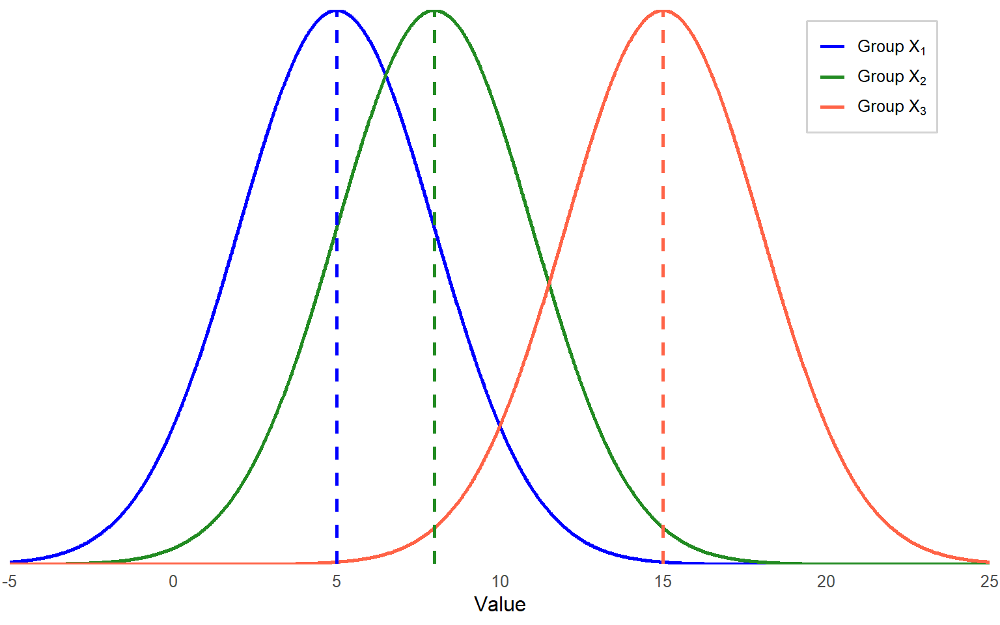
10 Chapter 10
Analyzing Differences Among More Than Two Groups
Learning Objectives
By the end of this chapter, you will be able to:
Differentiate between One-Way ANOVA and Factorial ANOVA by identifying appropriate scenarios for each test based on the number of independent variables and their levels.
Describe the underlying assumptions of One-Way ANOVA and Factorial ANOVA, including normality, homogeneity of variances, and independence.
Interpret results from One-Way ANOVA and Factorial ANOVA to determine group differences, examine interaction effects, and assess the impact of covariates on dependent variables, ensuring accurate statistical conclusions.
Use nonparametric tests like the Kruskal-Wallis Test for data that violates parametric assumptions.
One-way Analysis of Variance (ANOVA) is a statistical method used to compare the means of three or more groups to determine if there are statistically significant differences among them. Before we jump in, let’s briefly revisit the independent-samples t test, because a one-way ANOVA is really just an extension of the t test. You could also say that an independent-samples t test is a special case of ANOVA comparing only two groups. In a t test, we compare means between two groups. In a one-way ANOVA, we compare means among three or more groups. Maybe you don’t just want to compare high school students to college students, but instead you want to compare students from several different age groups. Sure, you could use t tests to look for differences between two groups at a time, but that is not a good idea. First of all, it is not efficient because comparing 5 groups would mean running 10 t tests. But even more importantly, you would increase the risk of making a Type I error, and we can avoid that risk by using an ANOVA.
How does running multiple t tests increase the odds of a Type I error? Experimentwise alpha (or familywise alpha) refers to the overall probability of making at least one Type I error (false positive) across all hypothesis tests in an experiment. This is particularly relevant in situations where multiple comparisons are made, as the risk of incorrectly rejecting a null hypothesis increases with the number of tests. In other words, when we use an alpha level of .05, we are saying there is a 5% probability that an observed significant difference was due to chance alone. If we run 10 tests on the same data, and there is a 5% chance of a Type I error each time, those odds really add up. Using a single ANOVA to compare means across multiple groups at once is better than conducting multiple t tests because we are controlling for any compounding of the Type I error rate.
How does an ANOVA work? There is a clue in the name – analysis of variance. With ANOVA, we are comparing the variance in a dependent variable that is due to differences between groups to the variance due to differences within each group. There will always be some differences within groups because people are different in ways unrelated to the groups they are in. The key with an ANOVA is to find out how much of the total difference (or variance) in the dependent variable is due to people being in different groups, as opposed to people just being different from each other. We will go through an example to explain, but this video provides a good visualization of the concepts.
10.1 ANOVA Example
Let’s now go through the steps of hypothesis testing for a One-Way ANOVA using a hypothetical example to illustrate the process.
A researcher conducted a study for language acquisition to examine how different study techniques impact students’ performance to recall new vocabulary words. A total of 40 college students were randomly assigned to one of four learning strategies:
Repetition Group – Students repeatedly read through a list of 25 vocabulary words.
Visualization Group – Students created a mental image related to each vocabulary word to aid recall.
Technology-Aided Learning Group – Students used an interactive flashcard app that provided spaced repetition and automated quizzes to reinforce learning.
Control Group – Students were instructed to read through the list without applying any specific memorization strategy.
After studying for 15 minutes, students completed a recall test, writing down as many words as they could remember.
Imagine that these were the results:
| Repetition | Visualization | Technology-Aided Learning | Control |
|---|---|---|---|
| 13 | 17 | 17 | 10 |
| 12 | 15 | 18 | 12 |
| 12 | 15 | 16 | 9 |
| 11 | 17 | 16 | 12 |
| 9 | 18 | 20 | 4 |
| 11 | 18 | 21 | 11 |
| 11 | 14 | 18 | 9 |
| 14 | 15 | 20 | 8 |
| 13 | 17 | 19 | 9 |
| 8 | 18 | 17 | 5 |
| \(\bar{X}=11.4\) | \(\bar{X}=16.4\) | \(\bar{X}=18.2\) | \(\bar{X}=8.9\) |
In each group, the numbers are clustered very close together, and there are clear differences between groups. It is easy to glance at this table and decide that the differences are due to group membership. Now, imagine these were the results:
| Repetition | Visualization | Technology-Aided Learning | Control |
|---|---|---|---|
| 14 | 11 | 19 | 13 |
| 9 | 16 | 22 | 13 |
| 16 | 13 | 13 | 10 |
| 8 | 17 | 19 | 13 |
| 14 | 13 | 19 | 13 |
| 19 | 21 | 20 | 10 |
| 9 | 14 | 14 | 18 |
| 10 | 15 | 14 | 13 |
| 12 | 18 | 20 | 8 |
| 10 | 12 | 19 | 14 |
| \(\bar{X}=12.1\) | \(\bar{X}=15\) | \(\bar{X}=17.9\) | \(\bar{X}=12.5\) |
There are still some differences between groups, but the differences within groups are so great that it is hard to tell what is going on. Is the gap between the Visualization group and the Control group due to the learning condition, or did that group just randomly have a few more individuals who are unusually good at remembering words? In this case, the within group variation is so high that it obscures any between group variation.
Figure 10.1 provides a visual that may help. Imagine we have three groups, X1, X2, and X3. Each group has its own distribution of scores on the dependent variable, with its own mean and variance/standard deviation. If individual differences within the groups are large, then it is hard to make a conclusion about between-group differences by comparing means, because the group distributions may overlap.
Since there is quite a bit of overlap across the three distributions (large spread), mean differences may not be statistically significant. So, how do we know if there are significant group differences?
We are going to keep this very general to start and then go through the calculations with the actual data from the recall study. An ANOVA is really a ratio of two types of variances. The variance between groups is in the numerator, and the variance within groups (otherwise known as the error variance) is in the denominator. As more and more of the total variance is associated with the groups, the ratio gets larger. This ratio is called the F statistic and can be calculated by the following formula:
\[ F = \frac{MS_{BG}}{MS_E} = \frac{variance \, between \, groups} {variance \, within \, groups} \]
Unlike a t test which uses a t statistic and follows the t distribution, an ANOVA uses the F statistic and follows the F distribution. A t test compares means, which can be positive or negative. However, variance is either positive or zero, so the F distribution looks quite different from the t distribution. And actually, there are multiple F distributions. Just like the t distribution changes with the degrees of freedom (higher degrees of freedom means the distribution becomes closer and closer to normal), the F distribution also changes based on degrees of freedom. This time, however, we have two separate degrees of freedom. Some examples are shown in Figure 10.2.
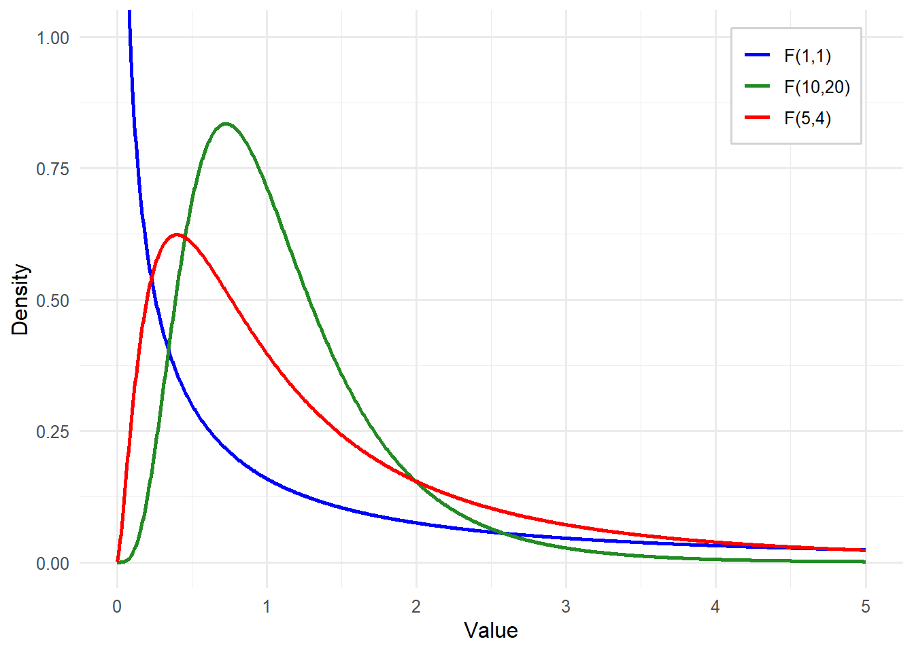
The degrees of freedom for the numerator (between groups) are the number of groups (k) minus 1. The degrees of freedom for the denominator (within groups, or error variance) are the total sample size (N) minus the number of groups (k). Just like with a t test, we use the degrees of freedom to help identify the critical value and then decide if the F statistic obtained by our data exceeds that value.
Turn to the Critical Values of F Distribution Table in the Appendix and you will find the critical values for the F distribution. Note that you must find the degrees of freedom for the numerator across the top and degrees of freedom for the denominator down the left side. You will see that even when your sample size is very large, which results in high degrees of freedom in the denominator, critical values are still above 1.0. This means that to get a significant F statistic, the variance between groups needs to be greater than the variance within groups.
Let’s get back to the different sources of variance in the dependent variable. In Figure 10.3, we have individual data points for three groups of four individuals each. There are horizontal lines representing each of the group means, as well as the grand mean for the entire data set. We are going to focus on one case (person one in group three, circled below) to explain the different types of variance.
The first thing we see is the distance between individual X31’s score on the dependent variable and the overall average. This is the distance X31 contributes to the total variation. Imagine squaring that distance and adding it up with the squared distances between the overall mean and every other individual data point, and you have the Sum of Squares (Total).
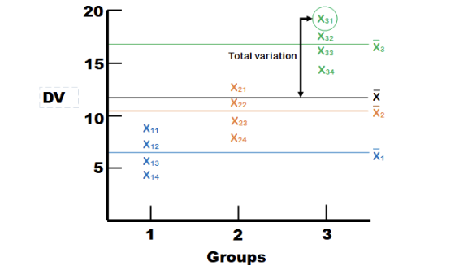
Next, we can see the distance between individual \(X_31\)’s score on the dependent variable and the mean for Group 3. This is the distance \(X_31\) contributes to the variation within groups, or the error variance. Error variance in ANOVA refers to the variation in the dependent variable that cannot be explained by the independent variable(s). It represents the variability within groups or conditions, which arises from random differences among individual observations rather than systematic differences between groups. We square that distance for each observation in each group and add them up to get the Sum of Squares (Error).
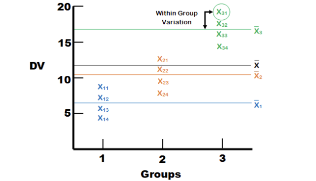
Finally, we have the distance between the mean of Group 3 and the overall mean. This is the distance that all members of Group 3 contribute to the between-group variance. We have three groups, so we have three group differences from the overall mean. To find the treatment effect, we first multiply each group mean difference by the number of observations in the group (in this case, each group mean by four) and then sum the three group mean differences to get the Sum of Squares (Treatment).
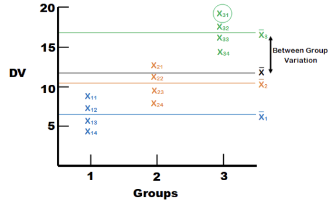
Okay, now we are going to dive into the actual numbers. But before you get overwhelmed by all the \(SS\)’s and \(MS\)’s, remember that a mean square (\(MS\)) is just a variance.
Let’s work through the example with different learning strategies. The results for each instructional group are as follows:
| Repetition | Visualization | Technology-Aided Learning | Control |
|---|---|---|---|
| 13 | 17 | 17 | 10 |
| 12 | 15 | 18 | 12 |
| 12 | 15 | 16 | 9 |
| 11 | 17 | 16 | 12 |
| 9 | 18 | 20 | 4 |
| 11 | 18 | 21 | 11 |
| 11 | 14 | 18 | 9 |
| 14 | 15 | 20 | 8 |
| 13 | 17 | 19 | 9 |
| 8 | 18 | 17 | 5 |
| \(\bar{X}=11.4\) | \(\bar{X}=16.4\) | \(\bar{X}=18.2\) | \(\bar{X}=8.9\) |
Step 1: Determine the null and alternative hypotheses.
The first step is to state our hypotheses. The hypotheses for a one-way ANOVA are as follows:
For k groups,
\[ H_0: \mu_1=\mu_2= … =\mu_k \text{(all group means are equal)} \]
\[ H_a : not\,all\,the\,μ_i\,are\,equal \text{(at least one group means differ from the others)} \]
It is important to note that the alternative hypothesis does NOT imply that all group means are different. Rather, rejecting the null hypothesis indicates that at least one group mean is significantly different from the rest. This could mean that all means are different or that only one differs from the others. In our example, \(k = 4\) and thus,
\[ H_0: \mu_1=\mu_2= \mu_3 =\mu_4 \]
Or \[ H_0: \mu_{Repetition} = \mu_{Visual} = \mu_{TechAid} = \mu_{Control} \]
\[ H_a: not\,all\,the\,μ_i\,are\,equal \text{(at least one group means differ from the others)} \]
Step 2: Set the criteria for a decision.
Let’s set \(α = 0.05\) as our criteria for decision as usual. Remember, ANOVA uses the F distribution, which is defined by two separate degrees of freedom for the sampling distribution of the test statistic, \(F = \frac{MS_{BG}}{MS_E}\). The degrees of freedom for between-group variation are \(df_{BG} = k - 1\). The degrees of freedom for within-group (error) variation are \(df_E = N - k\). In this example, \(k = 4\) and \(N = 40\). Thus, the sampling distribution of F follows an F distribution with (\(df_{BG}\), \(df_E\)) = (3, 36).
We reject the null hypothesis if our observed F value is greater than the critical F value, which in this case is 2.87.
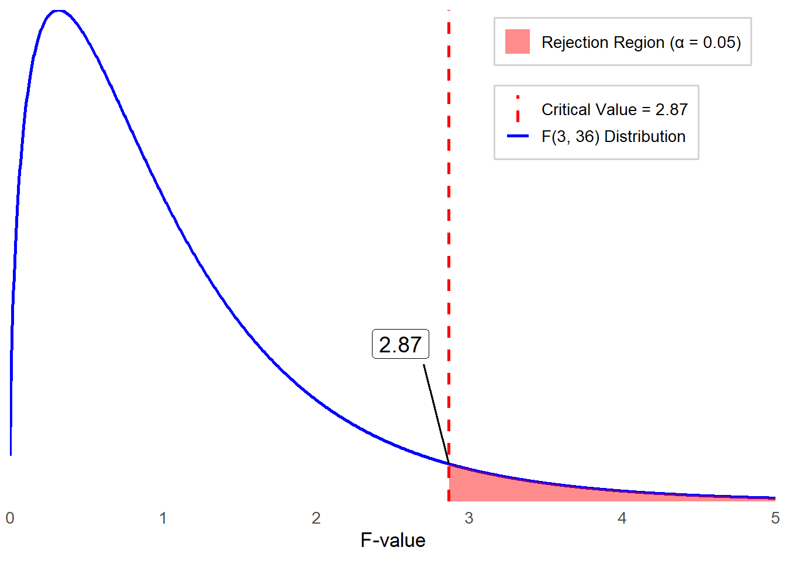
Step 3: Check assumptions and compute the test statistic.
The next step is to ensure that your data meets the assumptions required for a One-Way ANOVA. What are these assumptions?
Independence within groups: The same participants shouldn’t be in multiple groups.
Normality: The dependent variable should be approximately normally distributed within each group.
Homogeneity of Variances: The variance of the dependent variable should be similar across all groups.
The dependent variable (the variable of interest) needs to be a continuous scale (i.e., the data needs to be at either an interval or ratio measurement).
As we learned, it is important to explore data using both descriptive statistics and visual inspections with figures and graphs. Let’s review the descriptive statistics.
| Group | \(\bar{X}\) | \(SD\) | Skewness | Kurtosis |
|---|---|---|---|---|
| Repetition | 11.4 | 1.84 | -0.61 | -0.02 |
| Visualization | 16.4 | 1.51 | -0.37 | -1.59 |
| Technology-Aided Learning | 18.2 | 1.75 | 0.24 | -1.23 |
| Control | 8.9 | 2.69 | -0.77 | -0.08 |
Although we need to be cautious about interpreting descriptive statistics due to a small sample size in each group, we observed:
Skewness values range from -0.77 to 0.24, which is within the normality threshold (-1 to 1).
Kurtosis values range from -1.59 to -0.02, indicating mild to moderate deviations from normality.
The Control group shows the largest deviation in skewness (-0.77) and a relatively higher standard deviation (2.69), suggesting possible non-normality.
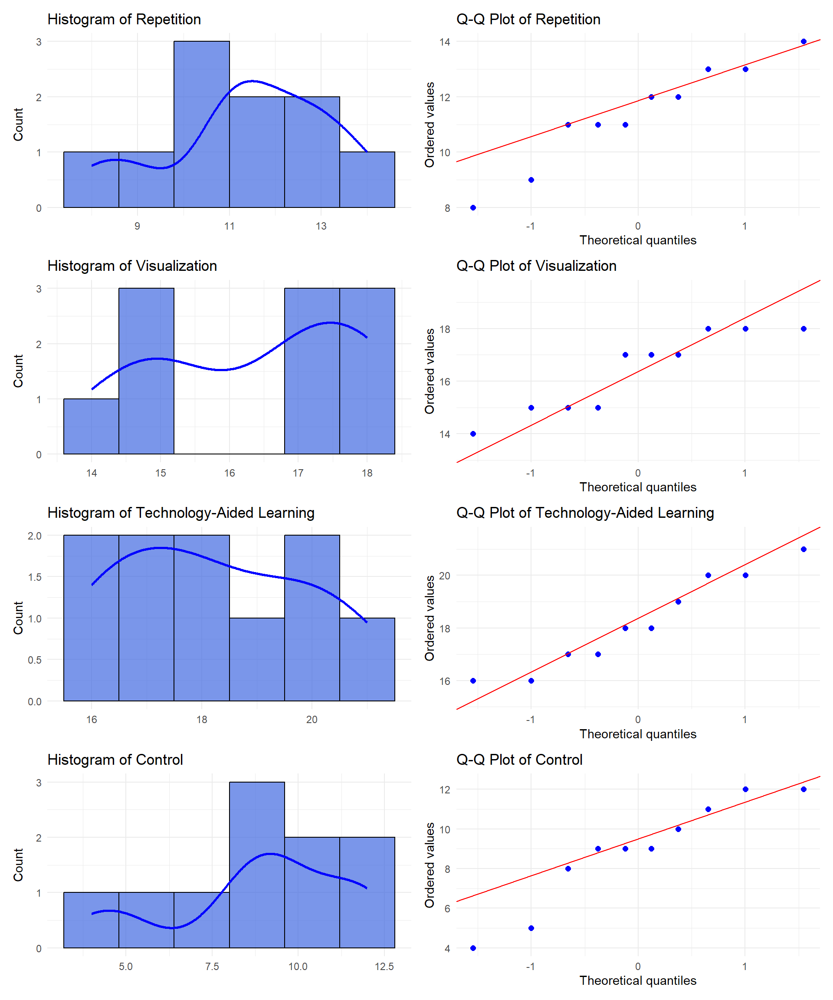
Again, acknowledging small sample size per group, our visual inspection with graphs (Histograms and Q-Q plots) indicates that:
Repetition: Slight left skew, mild deviation in Q-Q plot.
Visualization: Close to normal, minor deviations.
Technology-Aided Learning: Slight right skew, generally normal.
Control: Noticeable skewness and deviation in Q-Q plot.
Overall, while some distributions—particularly for Control—exhibit mild deviations from normality, none display severe non-normality. Additionally, it is important to note that ANOVA is robust to mild violations of the normality assumption, allowing us to proceed with the analysis.
Now, what about the homogeneity of variances? Recall that we used Levene’s test to assess the equality of variances. We can use the same statistical test for equality of variances for more than two groups. Before then, let’s start with exploring the descriptive statistics, one more time, by comparing the size of standard deviations across groups. The Control group has a slightly higher standard deviation than the others, which suggests possible violation of the homogeneity of variance assumption. To formally determine this, let’s run Levene’s test.
Remember that Levene’s test is to assess whether the variances across groups (in this case four learning strategies) are equal.
\(H_0\): The variances across all groups are equal (i.e., homogeneity of variance assumption holds).
\(H_A\): At least one group has a different variance (homogeneity of variance is violated).
Levene’s test can be run with statistical software such as SPSS. For the learning strategies data, the p value for Levene’s test is 0.648, which is greater than 0.05. Thus, we fail to reject the null hypothesis, which means that the homogeneity of variance assumption is met. Now, we can proceed with a one-way ANOVA analysis.
To test our null hypothesis, we need to define and estimate the three sources of variation in ANOVA: Total variation, Error (within-group variation), and Treatment (between-group variation). We are not going to walk you through the manual calculations. Instead, we will first present the ANOVA table below, which is a standard output from statistical software.
| Source | Sum of Squares (\(SS\)) | Degrees of Freedom (\(df\)) | Mean Squares (\(MS\)) | \(F\) |
|---|---|---|---|---|
| Between Groups | 558.67 | 3 | 186.22 | 46.78 |
| Within Groups (error) | 143.3 | 36 | 3.98 | |
| Total | 701.98 | 39 |
Where are all those values coming from? Start with the first line. Between groups sum of squares comes from the third type of variation we showed you earlier in the chapter – the difference between group means \((\bar{X_j})\) and the overall mean \((\bar{X})\). The difference for each group was multiplied by the sample size of the group, \(n_j\), and then all sum up across groups.
\[ SS_{BG} = \sum n_j \left( \bar{X}_j - \bar{X} \right)^2 = 10(11.4 - 13.73)^2 + \cdots + 10(8.9 - 13.73)^2 = 558.675 \]
Then we have df for the numerator, or df between groups, which is k -1 or 3. Remember, MS = variance, so the Mean Square value is simply the Sum of Squares for Between-Groups \((SS_{BG})\) divided by the degrees of freedom \((df_{BG})\) because when we calculate variance we divide \(SS\) by \(df\). With this, we now have the numerator for our \(F\) statistic.
\[ MS_{BG} = \frac{\sum n_j \left( \bar{X}_j - \bar{X} \right)^2}{k - 1} = \frac{558.675}{3} = 186.225 \]
Next, we have the line for Within Group differences, or error variance. The Sum of Squares for within-group variance \((SS_E)\) comes from the second type of variation we showed you – the difference between each individual person’s score \((X_{ij})\) and their own group’s mean score \((\bar{X_j})\)
\[ SS_E = \sum (X_{ij} - \bar{X}_j)^2 = 143.3 \]
Then we have \(df\) for the denominator, or \(df\) within groups, which is \(N - k\) or \(36\). The Mean Square value on this line is \(SS_E\) divided by \(df_E\).
\[ MS_E = \frac{\sum (X_{ij} - \bar{X}_j)^2}{N - k} = \frac{143.3}{36} = 3.981 \]
So now you have the numerator for our F statistic.
\[ F = \frac{186.225}{3.981} = 46.78 \]
Step 4a: Find the p value.
Based on the decision criteria we set in step 2, a critical value at \(\alpha = 0.05\) is \(2.87\). Our obtained \(F\) statistic \((F = 46.78)\) is much larger than this critical value, meaning the associated \(p\) value is smaller than \(0.05\). Therefore, we reject the null hypothesis and conclude that at least one group mean is significantly different than the others. The actual \(p\) value is \(1.67×10^{−12}\), in such small \(p\) value, we report it as \(p < .001\).
Step 4b: Draw a conclusion and report your conclusion.
As we reject the null hypothesis, we conclude that the average recall performance of college students significantly differs for at least one of the learning strategies used.
APA-style sample: A one-way ANOVA was conducted to examine the effect of learning strategies on college students’ recall performance. The results indicated a statistically significant difference among at least one of the learning strategies, \(F(3,36) = 46.78\), \(p < .001\).
Before we move on, think about why the homogeneity of variances assumption exists. We are summing up all the differences between individual data points and their respective group means, then dividing that result by the degrees of freedom within groups to get an overall error variance. If some groups have individuals that are widely spread apart from each other, while other groups have a much smaller spread, the average variance will not be a good estimate for the error of any of the groups.
A key limitation of ANOVA arises when group sizes are extremely imbalanced, as groups with larger sample sizes will contribute more to variance estimates. This issue becomes more problematic when group sizes are both imbalanced and have unequal variances, leading to inaccurate F statistics and an increased risk of Type I or Type II errors. In that scenario, we would suggest taking a random sample from one or more groups with large sample sizes to create similar-sized groups. Of course, if your overall sample size decreases, you lose statistical power, but at least you can improve the reliability of analysis by minimizing bias in variance estimation.
This brings us to the concept of power. In earlier chapters, we mentioned statistical power multiple times. Statistical power is the probability of correctly rejecting the null hypothesis when it is false. In other words, it is the likelihood that a study will detect an effect or difference if one truly exists. Look back at the formula for the F statistic. What would make the outcome larger and, therefore, make it more likely to reject the null hypothesis?
Make the numerator larger
Make the denominator smaller
The first is pretty straightforward. If there are greater differences between groups, then the numerator increases. For the second option, we need to look at how we calculate the denominator, which is \(MS_E\). We took the \(SS_E\) and divided it by \(df_E\). We now have another fraction, and this time the denominator is \(N – k\), which is the formula for within-group degrees of freedom. What happens as this increases?
When you have a larger number in the denominator of a fraction, the result is going to become smaller.
Since \(MS_E\) is the denominator of the fraction for the F statistic calculation, a smaller \(MS_E\) leads to a larger \(F\) statistic, making it more likely to detect significant differences between groups.
The conclusion is that, pretty much as always, a larger sample size gives you more power. Nothing new here, but it helps to see how that actually works out mathematically.
10.2 Post Hoc Test
Think back to the null hypothesis for a one-way ANOVA. If we reject the null hypothesis, all we know is that at least one group mean is significantly different from at least one other group mean. In order to learn which means are different, we need to conduct post hoc tests.
The first step is to look at a means plot for a visual representation of the data, providing an indication of which means may be different. Figure 10.8 shows us that Visualization and Technology-Aided Learning are probably not significantly different from each other, but the other means (Repetition and Control) seem to differ from the first two. We can’t tell if they also differ from each other.
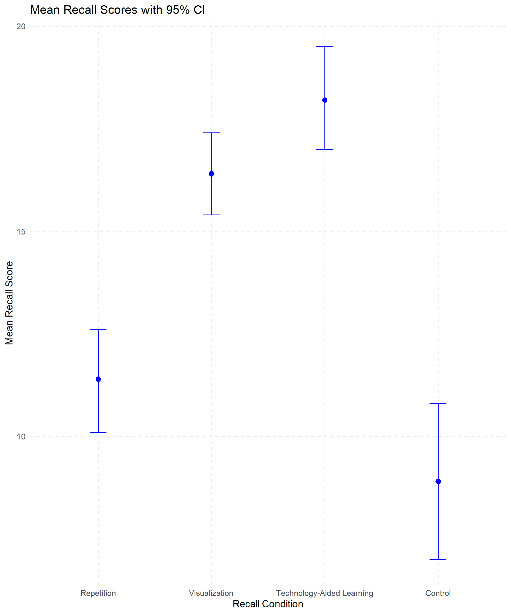
Before we run the post hoc tests that will tell us which groups are significantly different from each other, we want to revisit the concept of familywise error (or experimentwise error). So far, we have run one analysis on this single dataset and we used an alpha level of \(0.05\), indicating that we are willing to accept a 5% chance that we will reject a null hypothesis that is actually true (false positive). If we only perform one test, then the Type I error rate is equal to our alpha level, but if we conduct more tests on the same data, our chance of getting a false positive increases. Consider all the comparisons we could theoretically make for this recall data:
Repetition vs Visualization
Repetition vs Technology-Aided Learning
Repetition vs Control
Visualization vs Technology-Aided Learning
Visualization vs Control
Technology-Aided Learning vs Control
That is a lot of tests! With 4 groups, we could make up to 6 comparisons. The formula for calculating the error rate for an entire set of comparisons is \(1 − (1−α)^c\), in which C = the number of comparisons. For four groups and 6 comparisons, our experimentwise error rate is actually 0.26, which is much higher than our theoretical alpha level of 0.05.
There are many different ways to manage this problem. We will highlight three of the most frequently used post hoc tests and provide brief descriptions for several others. Multiple comparison procedures make comparisons while controlling for the increased risk of Type I error that occurs due to multiple testing. The multiple comparison procedures use the same general form of the t statistic. What distinguishes one multiple comparison procedure from another is the kind of contrasts that can be tested (pairwise vs complex), how they control the familywise error rate, and whether they are part of a post hoc or planned analysis.
The Bonferroni post hoc test is the most conservative. It simply divides your starting alpha level by the number of tests you are running and then conducts t tests between each pair. We have an alpha of .05 and 6 comparisons in our example, so our effective significance would be .0083. This means that under the Bonferroni correction, a comparison would need a p value less than 0.0083 to be statistically significant. This is more conservative and reduces the chance of Type I error at the cost of statistical power. This is a pretty tough test, and if you have even more groups, you could end up with a significant ANOVA but no significant pair-wise comparisons. If that happens, then you know for sure that your post hoc test was too conservative.
Fisher’s Least Significant Difference test (LSD) is a simple post hoc pairwise comparison procedure used to determine whether the means of two groups differ significantly. This test figures out the smallest significant difference between two means as if a test had been run on those two groups, and then any difference larger than that is also considered a significant result. This test has greater power to detect a significant difference between groups, but the tradeoff is that the method does not control for familywise error rate (the probability of making one or more Type I errors), meaning the likelihood of making a type I error increases with multiple comparisons.
Tukey’s Honestly Significant Difference (Tukey’s or HSD) test is a post hoc analysis method used to determine which specific group means are significantly different, while controlling the familywise error rate. Tukey’s test is similar to a t test but it has larger critical values (using the Studentized range statistic), so it is more difficult to reject the null.
| Test Name | Description |
|---|---|
| Sidak | Pairwise multiple comparison test based on a t statistic. Adjusts the significance level for multiple comparisons and provides tighter bounds than Bonferroni. |
| Scheffé | Performs simultaneous joint pairwise comparisons for all possible combinations of means. Uses the F distribution and can examine all linear combinations of group means, not just pairwise comparisons. |
| S-N-K | Student–Newman–Keuls test makes pairwise comparisons using the Studentized range distribution. Compares pairs of means within homogeneous subsets, testing extreme differences first. |
| Tukey’s b | Uses the Studentized range distribution to make pairwise comparisons. The critical value is the average of the corresponding values for Tukey’s HSD and Student–Newman–Keuls tests. |
| Duncan | Uses a stepwise approach similar to Student–Newman–Keuls but controls the error rate for the entire set of comparisons rather than individual tests. Uses the Studentized range statistic. |
| Waller–Duncan | Multiple comparison test based on a t statistic with a Bayesian approach. |
| Dunnett | Pairwise t-test comparing a set of treatments against a single control mean. Can perform two-sided or one-sided tests to check if means are greater or smaller than the control. |
10.3 Effect Size
The last thing we will discuss about one-way ANOVAs is how to measure effect size. The concept is the same as with other types of analyses. Even if there is a statistically significant difference, we want to know if it is practically meaningful. For ANOVAs, effect size is measured in terms of the proportion of variance explained. We have focused on pairwise comparisons, but we are going back to the overall model and estimating to what extent group membership explains changes in the dependent variable for effect size.
To assess the size of the effect in an ANOVA, we can estimate Eta Squared (\(\eta^2\)), which provides the proportion of variance explained by the treatment.
\[ \eta^2 = \frac{SS_{BG}}{SS_{total}} = \frac{558.675}{701.98} = 0.796 \]
his tells us that 79.6% of the variation in the number of words recalled is a function of the learning condition. According to Cohen (1988), this represents a large effect size, suggesting that the instructional method has a strong influence on recall performance. Unfortunately, \(\eta^2\) is a biased estimator, meaning that it tends to overestimate the true effect size. A less biased estimator for explained variance is Omega Squared (\(\omega^2\)), where:
\[ \omega^2 = \frac{SS_{BG} - [(k - 1)MS_E]}{SS_{total} + MS_E} = \frac{558.68 - (3 \times 3.98)}{701.98 + 3.98} = \frac{546.74}{705.96} = 0.774 \]
As you can see, the value for \(\omega^2\) is lower, estimating that \(77.4%\) of the variation in the number of words recalled is due to the learning condition. Whenever you need to report effect size, we recommend using \(\omega^2\) because it is less biased.
10.4 Factorial ANOVA
The first type of ANOVA we learned was one-way, meaning there was only one factor. We divided people into groups by condition. Now, we are adding another factor into the mix. A factorial ANOVA is a statistical test used to analyze the effects of two or more categorical independent variables (factors) on a continuous dependent variable, including their interaction effects. It extends the one-way ANOVA by examining multiple factors simultaneously, allowing for a more comprehensive analysis. A classic example for using a factorial ANOVA is testing outcomes based on an intervention (treatment) and looking at whether the intervention is equally effective across different subsets of the sample.
For example, say you have a new way to coach students on reading and you want to find out if students who experience this treatment earn higher scores on a reading assessment than a control group. There are probably going to be students whose reading ability is high enough to start out that they are not going to show much of an increase – they don’t really need the intervention. However, students who started out a little behind on reading could make significant progress based on the intervention.
| Intervention conduction | ||
|---|---|---|
| Reading Ability | Treatment | Control |
| High | ||
| Low |
If you did not use a factorial ANOVA and just ran a \(t\) test comparing reading scores for treatment and control students, you might not see a significant result. But if you divide students into ability groups, you might find that the treatment was very helpful for students in a lower-ability group. This is called an interaction effect, and it is typically what we are especially interested in when we use factorial ANOVA to analyze our data.
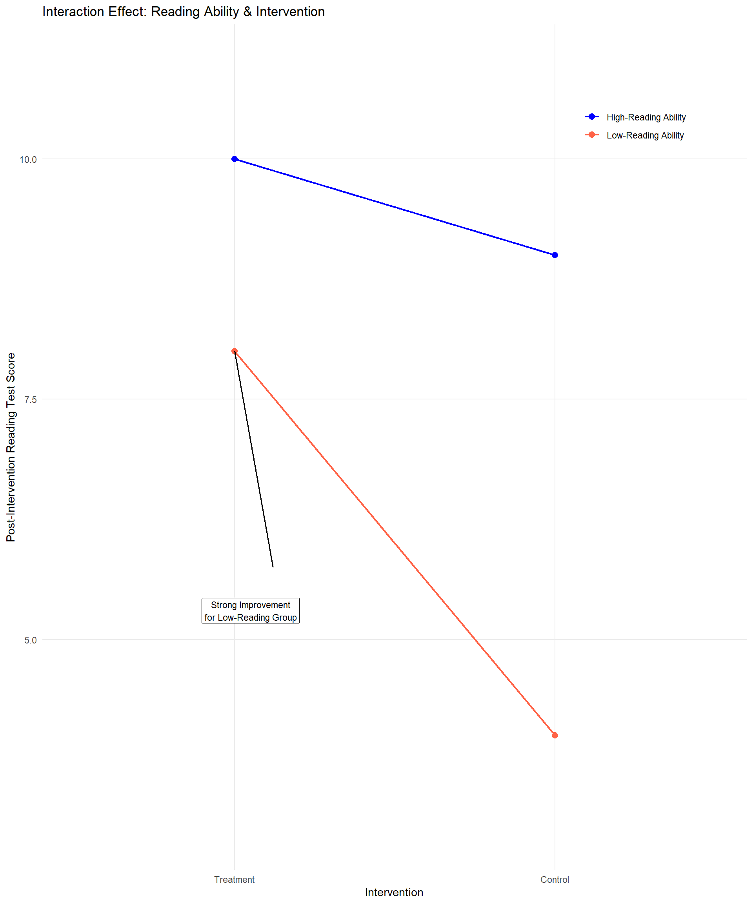
While rare in educational research, you can have more than two factors but for the simplistic nature of this book we are going to stick with only two. This can be referred to as a two-way ANOVA, or as an X by Y ANOVA, with X and Y representing the different number of groups for each factor. In our example, we had a treatment and control group, and then if we had students grouped in two reading levels, that would result in a 2x2 ANOVA. There are three basic designs for a two-way ANOVA:
- 2-Between, or Between-Subjects Design: a two-way ANOVA where different participants are observed in each cell or group. This means that no individual belongs to more than one cell. For the example above, students would be in only one of the four groups: treatment/low ability, treatment/high ability, control/low ability, or control/high ability.
- 1-Between 1-Within, or Mixed Design: a two-way ANOVA where different participants are observed at each level of the between-subjects factor and are repeatedly observed across the levels of the within-subjects factor. If you have a 2x2 mixed ANOVA, each person will be in two cells. To apply this approach to the example above, imagine that it wasn’t an experiment. Instead, a teacher just used this new method for all students. The between-subjects factor would still be the two ability groups, but then students at each ability level would be tested multiple times during the year.
- 2-Within, or Within-Subjects Design: a two-way ANOVA where the same participants are observed at each level of two factors. In this case each person is in all the cells; the composition of the cells is the same across the entire grid. If we wanted to apply this design to the example above, we would have to abandon the idea of grouping students by ability. Instead, imagine that we want to find out if the coaching intervention works better for reading and math. The teacher could test the same group of students on reading and math at the start of the year, then again after a period of time; the idea would be to see if students improved at an equal rate in both subjects. Our example is getting a little weird, so here is a more typical scenario for a 2-Within Factorial ANOVA: One group of students watches two types of instructional videos on different topics. Students are then asked to recall what they learned from the video right after watching and again one week later. The research question would ask which video was more effective for longer-term recall.
Each factor is usually identified with a letter in a two-way ANOVA, such as A and B, although it doesn’t have to be. It is also common to identify the levels of each factor numerically and use the numbers to identify the ANOVA model. For example, if you measure how quickly (in seconds) subjects respond to a stimulus that varies in size (small, medium, large) and color (dark, bright), we might designate Factor A as size and Factor B as color. Using the levels of each factor, you can describe this as a 3x2 ANOVA or 3x2 factorial design.
We often arrange the data from an ANOVA test in a table, and when we do, there is a special notation to indicate each entry. We are going to use another version of the vocabulary recall study as our example.
Imagine that a researcher is investigating the impact of noise level (Loud vs. Quiet) and learning strategies (Repetition, Visualization, Technology-Aided Learning, Control) on vocabulary recall performance. This study aims to determine whether different instructional methods are more effective for certain types of learners.
The research addresses the following questions:
Do students who study in loud and quiet environments differ in their vocabulary recall performance?
Does vocabulary recall vary based on learning strategy (Repetition, Visualization, Technology-Aided Learning, Control)?
Does the effectiveness of learning strategies depend on the noise level of one’s study environment?
- For example, do students who study in a loud environment benefit more from visualization strategies than those who study in a quiet environment?
To explore these questions, the researcher collected data from 80 college students, with 10 participants assigned to each condition. It is an entirely between-subjects design, in that participants were separated into two groups by noise level while studying (loud vs. quiet) as well as the four learning conditions.
Levels of Factor A – symbolized as “a” If there are two levels (e.g., loud vs. quiet), \(a = 2\).
Levels of Factor B – symbolized as “b” If there are four levels (Repetition, Visualization, Technology-Aided Learning, Control), \(b = 4\).
The combination of one level from each factor is called a cell. The number of cells represents the number of groups in a study.
- Total number of cells = ab
In the vocabulary recall example, there are 8 cells.
When we indicate the mean of the specific cell, we use subscripts. As a general form, we use to represent the mean of the cell that is the ith category of Factor A and jth category of Factor B. For example, the mean of Loud environment group for the Repetition condition is represented as \(\bar{X}_{11}\). This represents the mean of the first category of noise level while studying and the first category of learning strategy condition.
10.5 Describing Variability: Main Effects and Interactions
As we continue learning about ANOVAs, remember that this test is all about the different sources of variance. With a two-way between-subjects ANOVA, we have four sources of variation to consider.
We still have within-group variation, or error. This is the variation within groups due to measurement error or just people being different from each other even though they’re in the same group. As before, you find the sum of squared differences between each individual score in a cell and the mean score for that individual’s cell. This is still referred to as \(SS_E\).
Our between-groups variation is now split into two factors. First, we have variation due to Factor A, which is known as the Main Effect of Factor A. In the vocabulary recall example, this would be variation in the number of words recalled due to the noise level factor. You compute this just like you would find the between-groups effect in a one-way ANOVA: sum the squared differences between the mean of a specific level of Factor A (including all levels of Factor B) and the grand mean. Instead of calling this \(SS_{BG}\), we call it \(SS_A\).
Second, we have variation due to Factor B, or the Main Effect of Factor B. In the vocabulary recall example, this is the effect of Learning Strategy Conditions. Note that the main effects don’t take the other factor into consideration. When you are looking for the main effect of Learning Strategy Conditions, you are combining the noise level groups as if there was only one factor. Summing up the squared differences between the mean of a specific level of Factor B and the grand mean gives you \(SS_B\).
Finally, we could have variation due to an Interaction Effect between the two factors, which means the effect of one factor depends on the level of another factor. In our example, you could see a different pattern of mean differences among conditions for the loud group compared to the quiet group. If there is no interaction effect, the pattern in mean differences by learning strategy condition is the same for both noise level groups.
Finding the variation due to the interaction effect takes a couple steps. First, we find \(SS_{cells}\) by summing the squared differences between each cell mean and the grand mean. This is the variability attributed to the combination of levels for Factors A and B. However, this is not the interaction effect, because it also includes main effects that we need to subtract out. Think about it – if we are comparing one cell mean to the grand mean, any difference could be due to the main effect of one or both factors.
What we really need is \(SS_{AB}\), which is the variation solely due to the interaction between Factor A and Factor B, which is what we get after subtracting out the variation due to each main effect, which we already identified.
\[ SS_{\text{cells}} = SS_A + SS_B + SS_{AB} \]
Or, slightly rearranged: \[ SS_{AB} = SS_{\text{cells}} - (SS_A + SS_B) \]
10.6 Hypothesis Testing in a Two-Way ANOVA
Let’s explore our example that investigates the impact of noise level while studying (loud vs. quiet) and learning strategies (Repetition, Visualization, Technology-Aided Learning, Control) on vocabulary recall performance.
Our research questions are:
Do students who study in loud and quiet environments differ in their vocabulary recall performance?
Does vocabulary recall vary based on learning strategy (Repetition, Visualization, Technology-Aided Learning, Control)?
Does the effectiveness of learning strategies depend on the noise level of one’s study environment?
The collected data are presented in the table below.
| Noise Level | Repetition | Visualization | Technology-Aided Learning | Control |
|---|---|---|---|---|
| Quiet | 16 | 11 | 15 | 10 |
| Quiet | 14 | 9 | 16 | 13 |
| Quiet | 13 | 8 | 13 | 8 |
| Quiet | 13 | 12 | 13 | 13 |
| Quiet | 9 | 14 | 19 | 1 |
| Quiet | 11 | 13 | 21 | 11 |
| Quiet | 12 | 8 | 16 | 9 |
| Quiet | 17 | 10 | 20 | 8 |
| Quiet | 15 | 11 | 18 | 9 |
| Quiet | 8 | 13 | 15 | 3 |
| Mean | 12.8 | 10.9 | 16.6 | 8.5 |
| Loud | 9 | 16 | 22 | 8 |
| Loud | 7 | 16 | 17 | 15 |
| Loud | 9 | 18 | 18 | 9 |
| Loud | 12 | 12 | 13 | 6 |
| Loud | 7 | 12 | 16 | 12 |
| Loud | 7 | 16 | 18 | 6 |
| Loud | 12 | 14 | 14 | 10 |
| Loud | 10 | 18 | 19 | 4 |
| Loud | 6 | 15 | 16 | 6 |
| Loud | 9 | 13 | 17 | 10 |
| Mean | 8.8 | 15.0 | 17.0 | 8.6 |
Step 1: Determine the null and alternative hypotheses
There are eight possible outcomes that you could obtain when you compute a two-way betweensubjects ANOVA:
All three hypothesis tests are not significant
Significant main effect of Factor A only
Significant main effect of Factor B only
Significant main effect of Factor A and Factor B
Significant AxB interaction only
Significant main effect of Factor A and an AxB interaction
Significant main effect of Factor B and an AxB interaction
All three hypothesis tests are significant
This means that defining the null and alternative hypotheses is somewhat complicated with factorial designs.
Hypothesis for Main Effects
Factor A
\[ H_0: \mu_1 = \mu_2 = … = \mu_A \text{(there is no main effect of Factor A)} \]
\[ H_A: \text{at least one mean of the levels in Factor A is different from other means.} \]
In our example, \(H_A\) would be, “Average number of words recalled differs by noise level group.”
Factor B
\[ H_0: \mu_1 = \mu_2 = … = \mu_B \text{(there is no main effect of Factor B)} \]
\[ H_A: \text{at least one mean of the levels in Factor B is different from other means.} \]
In our example, HA would be, “Average number of words recalled differs by learning strategy.” Interaction between Factor A and B: It is a bit hard to write an equation as we do for the main effects, but it is okay to say:
\(H_0\): there is no interaction effect between Factor A and B \(H_A\): there is an interaction effect between Factor A and B
In the recall example, \(H_A\) would be, “There is an interaction effect between noise level and learning strategy conditions.”
Step 2: Set the criteria for a decision.
To determine whether the noise level while studying and learning strategy significantly affect vocabulary recall, we will use a significance level (α) of 0.05, as usual. This means that we are allowing a 5% chance of incorrectly rejecting the null hypothesis. Since we use two-tailed tests for both main effects (A, B) and the interaction effect, we are considering both directions of possible effects—whether one group performs significantly higher or lower than another.
Because there are three key effects to evaluate:
the main effect of noise level while studying,
the main effect of learning strategy, and
the interaction effect between these two variables.
Each effect has an associated \(F\) statistic, which we will compare to a critical F value from the F distribution table to determine statistical significance. To determine the critical F statistics, we first need to know the degrees of freedom for each effect.
We will explain later in this chapter how to get these degrees of freedom, but for now we will provide them to move forward. For noise level while studying (which has 2 levels: loud and quiet), the degrees of freedom are (\(df_{BG}\), \(df_E\)) $ = (1, 72)\(. For the learning strategy factor (which has four levels: Repetition, Visualization, Technology-Aided Learning, and Control), the degrees of freedom are (\)df_{BG}$, \(df_E\)) \(= (3, 72)\). The interaction between noise level and learning strategy also has (\(df_{BG}\), \(df_E\)) \(= (3, 72)\).
As we have done before, once we obtain the F statistic for each effect from the ANOVA calculations, we will compare it to the corresponding F critical value for the given degrees of freedom and significance level. If the calculated F value exceeds the F critical value, we will reject the null hypothesis, indicating that the effect is statistically significant. On the other hand, if the F value is less than the F critical value, we will fail to reject the null hypothesis, meaning there is not enough evidence to conclude that the effect is significant.
| Source | Degrees of Freedom \((d f_{BG}, d f_E)\) | Critical F value (two-tailed) |
|---|---|---|
| Factor A | (1, 72) | 3.97 |
| Factor B | (3, 72) | 2.73 |
| Interaction (A & B) | (3, 72) | 2.73 |
Step 3: Check assumptions and compute the test statistic.
Assumptions for a Two-Way Between-Subjects ANOVA
Because we are talking about a between-subjects ANOVA (no factor is within-subjects), we are back to the same assumptions we started with:
Normality – we assume the dependent variable is normally distributed in the population or populations being sampled.
Random Sampling – we assume that the data measured were obtained from a sample that was selected using a random sampling procedure.
Independence – we assume that the probabilities of each measured outcome in a study are independent or equal.
Homogeneity of Variance – we assume that the variance in each group is equal to each other.
We will not go through the detailed steps for testing assumptions, but it is important to use both visual representations of the data and descriptive statistics to assess whether the assumptions of normality and homogeneity of variances are met. Additionally, statistical tests such as the Shapiro-Wilk test for normality and Levene’s test for homogeneity of variances can provide further support for interpreting the data.
In our example, Levene’s test resulted in \(p = 0.772\), meaning we fail to reject the null hypothesis of equal variances. Therefore, we conclude that the variances are approximately equal across all groups, satisfying the assumption of homogeneity of variance.
Interpreting Two-Way ANOVA Results
Remember that we have more than one hypothesis to test with a two-way ANOVA. We start by looking at the main effects of the two factors. The table below shows the means for each cell, and the means for each factor.
Learning Strategy
| Noise Level | Repetition | Visualization | Technology-Aided | Control | Factor A |
|---|---|---|---|---|---|
| Quiet | \(\bar{X}_{11} = 12.8\) | \(\bar{X}_{12} = 10.9\) | \(\bar{X}_{13} = 16.6\) | \(\bar{X}_{14} = 8.5\) | \(\bar{X}_1 = 12.2\) |
| Loud | \(\bar{X}_{21} = 8.8\) | \(\bar{X}_{22} = 15\) | \(\bar{X}_{23} = 17\) | \(\bar{X}_{24} = 8.6\) | \(\bar{X}_2 = 12.35\) |
| Factor B | \(\bar{X}_1 = 10.8\) | \(\bar{X}_2 = 12.95\) | \(\bar{X}_3 = 16.8\) | \(\bar{X}_4 = 8.55\) | \(\bar{X} = 12.275\) |
Our main effect tests ignore all the individual cell means because we are essentially running two separate one-way ANOVAs, one for each factor. The test statistic for the main effect of Factor A is:
\[ F_A = \frac{\text{variance of group means for Factor A}}{\text{variance attributed to error}} = \frac{MS_A}{MS_E} \]
Replace the As with Bs and you have the test statistic for the main effect of Factor B:
\[ F_B = \frac{\text{variance of group means for Factor B}}{\text{variance attributed to error}} = \frac{MS_B}{MS_E} \]
Next, we test the interaction effect, which determines whether group means at each level of one factor significantly change across the levels of a second factor. Remember from earlier in the chapter that we need to find the variance for the AB interaction, which is the variation due to differences among cells after subtracting out the variation due to each main effect. So, the test statistic for the interaction effect is:
\[ F_{AB} = \frac{\text{variance of } AB}{\text{variance attributed to error}} = \frac{MS_{AB}}{MS_E} \]
| Source of Variation | SS | df | MS | F |
|---|---|---|---|---|
| Factor A (Noise Level) | \(SS_A\) | \(a - 1\) | \(\frac{SS_A}{df_A}\) | \(F_A = \frac{MS_A}{MS_E}\) |
| Factor B (Instructional Strategy) | \(SS_B\) | \(b - 1\) | \(\frac{SS_B}{df_B}\) | \(F_B = \frac{MS_B}{MS_E}\) |
| A × B (Noise Level × Strategy) | \(SS_{AB}\) | \((a - 1)(b - 1)\) | \(\frac{SS_{AB}}{df_{AB}}\) | \(F_{AB} = \frac{MS_{AB}}{MS_E}\) |
| Error (within groups) | \(SS_E\) | \(ab(n - 1)\) | \(\frac{SS_E}{df_E}\) | |
| Total | \(SS_{\text{total}}\) | \(abn - 1\) |
a = the number of categories in Factor A; b = the number of categories in Factor B; n=the number of observations in each cell.
Step 4: Find a p value, draw a conclusion, and report your conclusion.
Since we use statistical software to obtain all F statistics in practice, we will not show all the hands calculations of the sum of squares formula. However, we present the F table for the vocabulary recall study that summarizes all calculations so we can check our results
| Source | SS | df | MS | F | p |
|---|---|---|---|---|---|
| Factor A (Noise Level) | 0.45 | 1 | 0.45 | 0.06 | 0.81 |
| Factor B (Learning Strategy) | 739.65 | 3 | 246.55 | 31.51 | < .001 |
| A × B (Noise Level × Strategy) | 164.45 | 3 | 54.82 | 7.01 | < .001 |
| Error (within groups) | 563.4 | 72 | 7.83 | ||
| Total | 1467.95 | 79 |
The first thing we should check in a factorial ANOVA is the interaction effect. The \(F\) statistic of \(7.01\) was obtained by taking the \(MS_{AB}\) of 54.82 divided by \(MS_E\), which is 7.83. When the interaction is significant, that may change the interpretation of the separate main effects of each independent variable. The F statistic in our example is larger than the critical F value of 2.73, allowing us to reject the null hypothesis.
#| echo: false
#| message: false
#| warning: false
#| fig-align: center
#| fig-width: 10
#| fig-height: 12
#| fig-cap: "Noise Level Line Graph."
library(ggplot2)
# Data approximated from the figure
df <- data.frame(
Condition = rep(c("Repetition", "Visualization",
"Technology-Aided Learning", "Control"), 2),
Mean = c(12, 11, 16, 8, 9, 15, 17, 9),
Lower = c(10, 9, 15, 6, 7, 13, 15.5, 7),
Upper = c(14, 13, 17.5, 10, 11, 17, 18.5, 11),
Group = rep(c("Quiet", "Loud"), each = 4)
)
df$Condition <- factor(df$Condition,
levels = c("Repetition", "Visualization",
"Technology-Aided Learning", "Control"))
ggplot(df, aes(x = Condition, y = Mean, group = Group, color = Group, linetype = Group)) +
geom_line(size = 0.9) +
geom_point(size = 3) +
geom_errorbar(aes(ymin = Lower, ymax = Upper),
width = 0.15, size = 0.7) +
scale_color_manual(values = c("red", "blue")) +
scale_linetype_manual(values = c("solid", "dashed")) +
labs(
title = "",
x = "Recall Condition",
y = "Mean Recall Score",
color = "Noise Level",
linetype = "Noise Level"
) +
coord_cartesian(ylim = c(0, 19)) +
theme_minimal(base_size = 12) +
theme(
panel.grid.minor = element_blank(),
axis.text.x = element_text(angle = 20, hjust = 1)
)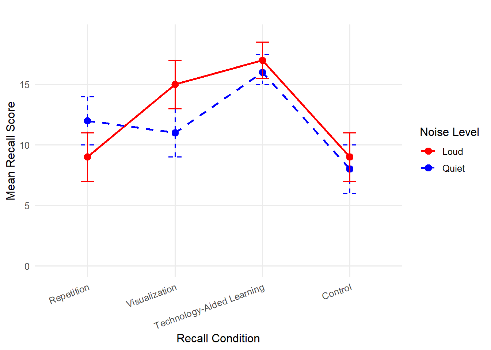
Next, we look at the main effects of Factor A (Noise Level) and Factor B (Learning Strategy), using the MS values for each to calculate the F statistic. In this case, we can reject the null hypothesis for Factor B, but not Factor A, and thus, we found a significant main effect of learning strategy, but not for noise level.
However, the way you interpret these results depends on the type of interaction. In this case, there was a significant interaction effect between Noise Level and Learning Strategy on the number of words recalled, F (3, 72) = 7.01, p < .05. Therefore, we already know that the effect of strategy conditions on the number of words recalled depends on the noise level, meaning that some strategies work better for students who studied in louder environments, while others work better for students who studied in quieter environments. Also, we know that there is no general advantage for either noise level across learning strategies because we did not find a significant main effect of Factor A. In other words, we cannot say one type of student overperforms the other consistently across all conductions. At the same time, the significant main effect of Factor B indicates that at least one of the strategies resulted in significantly higher or lower performance than others.
Now, let’s revisit the research questions and examine how our statistical results address each one.
Do students who study in loud and quiet environments differ in their vocabulary recall performance?
The main effect of noise level was NOT statistically significant \(F(1, 72) = 0.06, \, p = .81\). This suggests that learns who studied in loud and quiet learning environments did not differ significantly in their vocabulary recall performance.
Does vocabulary recall vary based on learning strategy (Repetition, Visualization, Technology-Aided Learning, Control)? The main effect of learning strategy was statistically significant, \(F(3, 72) = 31,52, \, p < .05\). This indicates that some learning strategies were more effective than others in enhancing vocabulary recall performance. However, a two-way ANOVA test does not tell which strategies are better or worse than others. A post hoc test would be helpful to determine which learning strategies lead to significantly higher or lower performance.
Does the effectiveness of learning strategies depend on the noise level of one’s study environment?
The interaction effect between noise level and learning strategy was statistically significant, \(F(3, 72) = 7.01, \, p < .05\). This suggests that the effectiveness of different learning strategies varied depending on whether the learner studied in loud or quiet learning environments.
In summary, some strategies may have benefited students who study in loud learning environments more than those who study in quiet environments, and vice versa. The significant interaction effect means that a one-size-fits-all approach to vocabulary learning may not be optimal, and learning strategies should be tailored to individual needs when it comes to noise level while studying.
There are three key points to understand for a two-way ANOVA:
One group can have significantly higher scores on a dependent variable than the other group across all levels of the second factor, and that doesn’t mean there is an interaction effect. In other words, the two lines can be quite far apart, but parallel. The indication of an interaction effect is whether two lines intersect.
You can have a main effect that is not significant at all, and yet it is very important because of its role in creating an interaction effect.
If you do have a significant interaction effect, focus on that. Depending on what the means plots look like, you may not end up reporting the main effects.
10.7 Post Hoc Tests and Effect Size
Post hoc tests are a little different for a factorial ANOVA. In fact, it is common to stop without doing any post hoc tests after finding a significant interaction. If you decide that the main effects are both statistically significant and meaningful, either there is no interaction effect or the main effects are still interpretable even with an interaction effect, you can move forward with post hoc tests on the main effects just like with one-way ANOVAs.
Instead of running additional tests, just describe the patterns with descriptive statistics. For example, we could describe our vocabulary recall results by saying that both noise level groups were similarly low under the “Control” condition, and both groups had higher scores under the “Technology-Aid” conditions, though the Quiet group outperformed the Loud group under the “Repetition” condition, while the Loud group performed better under the “Visualization” condition than the Quiet group. Do you notice how long that took to describe? Perhaps, the best thing you can do when you find an interaction effect is to display a graph – look back to figure 10.10.
The effect size calculations for \(\eta^2\) and \(\omega^2\) are the same as before. However, there is a third effect size to check because of the interaction term. Here is how you would calculate \(\eta^2\) and \(\omega^2\) for the interaction in our example:
\[ \eta^2_{AB} = \frac{SS_{AB}}{SS_{total}} = \frac{164.45}{1467.95} = 0.11 \]
\[ \hat{\omega}^2 = \frac{SS_{AB} - \left[df_{AB} \cdot MS_E\right]}{SS_{total} + MS_E} = \frac{164.45 - (3 \times 7.83)}{1467.95 + 7.83} = \frac{140.96}{1475.78} = 0.096 \]
Whether you use \(\eta^2\) or \(\omega^2\), the effect size of the interaction is small. In this case, the main effect, especially for learning strategy conditions, is much larger than the interaction effect, even though the latter is statistically significant.
APA style sample write-up: A two-way analysis of variance (ANOVA) was conducted to examine the effects of noise level while studying (loud vs. quiet) and learning strategy (Repetition, Visualization, Technology-Aided Learning, Control) on vocabulary recall performance. The assumptions of normality and homogeneity of variance were assessed prior to analysis. Levene’s test for equality of variances was non-significant, p = .772, indicating that the assumption of homogeneity of variance was met. The results of the two-way ANOVA revealed that a significant interaction effect was found between noise level and learning strategy, \(F(3,72) = 7.01, \, p < .05\), \(\omega^2 = .097\) was relatively small compared to the main effect of learning strategy, F(3,72) = 31.52, p < .05. These findings suggest that different learning strategies influence vocabulary recall performance, and their effectiveness depends on the noise level of the student’s learning environment. However, the interaction effect was smaller than the main effect of strategy, implying that certain strategies were generally more effective regardless of noise level, but some strategies were particularly beneficial for specific learning environment noise levels. Given these results, instructional methods should be tailored to accommodate individual learning environments rather than applying a uniform approach to vocabulary learning.
10.8 Other Types of Factorial ANOVA
While we have mostly talked about two-way between-subjects ANOVAs, there are other types of factorial ANOVAs you could consider. If you add a third factor in the analysis, the only difference is that you have more effects (main effect A, main effect B, main effect C, interaction AxB, interaction AxC, interaction BxC, and interaction AxBxC). The computation gets more complex, but that’s why we use software to run the analysis. The important thing to remember is what the variance components indicate.
10.9 Kruskal-Wallis Test for Nonparametric Analysis
The Kruskal-Wallis Test is a nonparametric statistical method used to determine whether there are significant differences between three or more independent groups based on a ranked dependent variable. In educational research, this test is particularly useful when the assumptions of parametric tests, such as ANOVA, cannot be met. For example, if the data are not normally distributed, contain outliers, or are measured on an ordinal scale, the Kruskal-Wallis Test provides a robust alternative. By ranking the data across all groups and comparing the sum of ranks, it evaluates whether the differences observed among groups are statistically significant.
In educational settings, the Kruskal-Wallis Test can be applied to explore differences in student outcomes across instructional methods, grade levels, or demographic groups. For instance, a researcher might use the test to examine whether students from different teaching strategies (e.g., lecture-based, inquiry-based, and flipped classrooms) exhibit varying levels of engagement, as measured by a survey on a Likert scale. Since the test does not rely on assumptions about the underlying distribution of the data, it is particularly suited for analyzing ordinal data like survey responses, where the distance between scale points may not be equal.
The test outputs a chi-squared statistic that indicates whether differences among the groups are significant. However, it does not specify which groups differ from each other. Post hoc tests, such as Dunn’s test with a Bonferroni correction, are often employed to identify pairwise differences when a significant result is obtained. The Kruskal-Wallis Test thus serves as a valuable tool for educational researchers seeking to analyze complex, real-world data where traditional parametric assumptions are not tenable, allowing for more inclusive and flexible statistical analyses.
Analyzing Differences Among More Than Two Groups in R
In this section, we illustrate how to perform one-way and two-way ANOVAs and their nonparametric alternative using the PISA 2022 U.S. dataset. We will first examine if math performance (PV1MATH) differs significantly across three types of school organizations (Religious, Non-profit, Government). We will then explore whether there is an interaction between school type and gender on students’ math performance.
# Load required package
library(haven)
library(dplyr)
library(car) # for Levene's Test
library(agricolae) # for post-hoc tests
library(effectsize)
library(FSA)
library(ggplot2)
# Load the dataset
data <- read_sav("chapter10/chapter10data.sav")
# Recode school type and gender for concise labeling
data <- data |>
mutate(
SchoolType = case_when(
SC014Q01TA == 1 ~ "Religious",
SC014Q01TA == 2 ~ "Non-profit",
SC014Q01TA == 4 ~ "Government"),
Gender = case_when(
ST004D01T == 1 ~ "Female",
ST004D01T == 2 ~ "Male"
),
SchoolType = factor(SchoolType),
Gender = factor(Gender)
)
# Remove cases with missing values
data <- data |>
filter(!is.na(PV1MATH), !is.na(SchoolType),
!is.na(ST004D01T) #Gender
) 1 One-Way ANOVA
Comparing Math Scores by School Type
1.1 Define Hypotheses
\(H_0\): Mean math scores are equal across all school types (\(\mu_{Religious} = \mu_{Non−profit} = \mu_{Government}\)).
\(H_a\): At least one school type mean differs from the others.
1.2 Check Assumptions
Before running ANOVA, let’s check for homogeneity of variances with Levene’s Test. The normality assumption can be checked visually with Q-Q plots or histograms, refer to Chapter 4 for details.
leveneTest(PV1MATH ~ SchoolType, data = data) Levene's Test for Homogeneity of Variance (center = median)
Df F value Pr(>F)
group 2 3.4018 0.0334 *
4283
---
Signif. codes: 0 '***' 0.001 '**' 0.01 '*' 0.05 '.' 0.1 ' ' 1Interpretation:
\(p=0.033<0.05\), suggesting variances are not equal across the groups. That is, the homogeneity of variances assumption is violated.
However, given our large sample size (n > 4,000), the test is sensitive and ANOVA is robust to this slight violation. We will proceed with the ANOVA test.
1.3 One-Way ANOVA Test
anova_result <- aov(PV1MATH ~ SchoolType, data = data)
summary(anova_result) Df Sum Sq Mean Sq F value Pr(>F)
SchoolType 2 751637 375818 42.42 <2e-16 ***
Residuals 4283 37943209 8859
---
Signif. codes: 0 '***' 0.001 '**' 0.01 '*' 0.05 '.' 0.1 ' ' 1Interpretation: The one-way ANOVA showed a statistically significant difference in mean math scores (PV1MATH) among the three school types (\(F(2,4283)=42.42, \,p<.001\)). This means that at least one school type has a mean math score that differs significantly from the others.
1.4 Post-hoc Tests
1.4.1 Bonferroni-Adjusted Pairwise t Tests
pairwise.t.test(
data$PV1MATH, data$SchoolType, p.adjust.method = "bonferroni"
)
Pairwise comparisons using t tests with pooled SD
data: data$PV1MATH and data$SchoolType
Government Non-profit
Non-profit <2e-16 -
Religious 1 2e-07
P value adjustment method: bonferroni Interpretation: The Bonferroni-adjusted pairwise t-tests indicate that students in non-profit schools have significantly different mean math scores compared to both government (\(p < 2e-16\)) and religious schools (\(p < 2e-07\)), while government and religious schools do not significantly differ from each other (\(p = 1\)).
1.4.2 Tukey’s HSD Test
TukeyHSD(anova_result) Tukey multiple comparisons of means
95% family-wise confidence level
Fit: aov(formula = PV1MATH ~ SchoolType, data = data)
$SchoolType
diff lwr upr p adj
Non-profit-Government -65.875937 -82.64460 -49.10727 0.0000000
Religious-Government -1.813041 -24.48836 20.86227 0.9808137
Religious-Non-profit 64.062896 36.29495 91.83084 0.0000002Interpretation: Tukey’s HSD confirms the Bonferroni results, showing that (1) math score in non-profit schools is significantly lower than in government schools (mean difference = -65.88, \(p < .001\)) and in religious schools (mean difference = -64.06, \(p < .001\)); (2) no significant difference in mean math scores between religious and government schools (mean difference = -1.81, \(p = .98\)).
1.5 Effect Size
eta_squared(anova_result) # Effect Size for ANOVA
Parameter | Eta2 | 95% CI
--------------------------------
SchoolType | 0.02 | [0.01, 1.00]
- One-sided CIs: upper bound fixed at [1.00].omega_squared(anova_result) # Effect Size for ANOVA
Parameter | Omega2 | 95% CI
----------------------------------
SchoolType | 0.02 | [0.01, 1.00]
- One-sided CIs: upper bound fixed at [1.00].Interpretation:
Both the \(eta^2\) and \(omega^2\) values are 0.02, meaning that about 2% of the variance in math scores is explained by school type. According to common benchmarks, this represents a small effect size. This suggests that other factors, beyond school type, account for most of the differences in performance.
2 Two-Way Factorial ANOVA
Comparing Math Scores by School Type and Gender
We add gender as a second independent variable to explore potential interaction effects.
\(H_a\)(School Type): Mean math scores differ by school type.
\(H_a\)(Gender): Mean math scores differ by gender.
\(H_a\)(School Type × Gender): Differences in math scores by gender depend on school type.
Assume the homogeneity of variances and normality holds for the two-way ANOVA, we can proceed with the analysis.
# Two-Way ANOVA Test
twoway_anova_result <- aov(PV1MATH ~ SchoolType * Gender, data = data)
summary(twoway_anova_result) Df Sum Sq Mean Sq F value Pr(>F)
SchoolType 2 751637 375818 42.545 < 2e-16 ***
Gender 1 104711 104711 11.854 0.000581 ***
SchoolType:Gender 2 31079 15540 1.759 0.172313
Residuals 4280 37807419 8834
---
Signif. codes: 0 '***' 0.001 '**' 0.01 '*' 0.05 '.' 0.1 ' ' 1# Create an interaction line plot
ggplot(data, aes(x = Gender, y = PV1MATH, group = SchoolType, color = SchoolType)) +
stat_summary(fun = mean, geom = "line", size = 1.2) +
stat_summary(fun = mean, geom = "point", size = 3) +
stat_summary(fun.data = mean_se, geom = "errorbar", width = 0.1) +
labs(
title = "Interaction between School Type and Gender on Math Scores",
x = "Gender",
y = "Mean Math Score"
) +
theme_minimal() 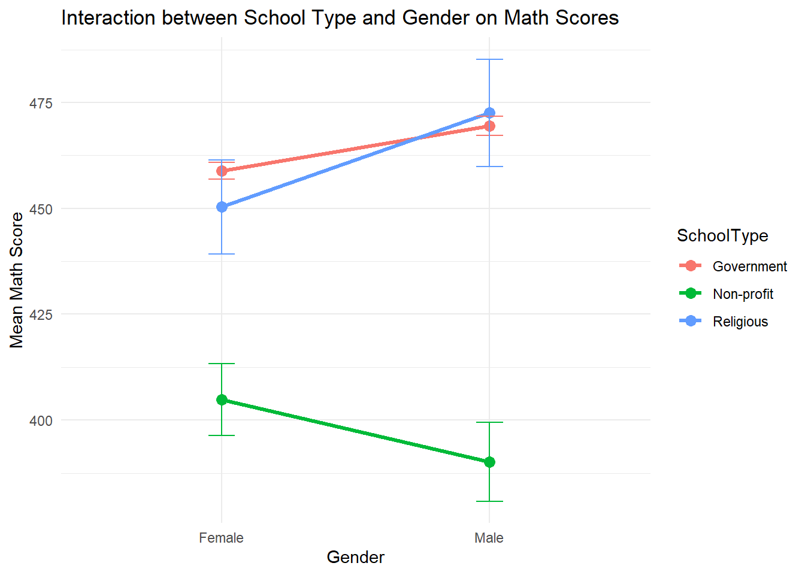
The two-way ANOVA results show significant main effects of both school type (\(F(2,4280)=42.55, \,p<.01\)) and gender ( (\(F(1,4280)=11.85, \,p=.01\))). This means that students’ average math scores differ significantly across the three school types (Government, Non-profit, Religious) and gender groups (female, male). The interaction between school type and gender is not significant (\(F(2,4280)=1.76, \,p=.17\)). This suggests that the gender difference in math scores does not vary enough across school types to reach statistical significance.
The line chart visualizes the means and suggests that gender gaps may appear to differ by school type (e.g., females perform slightly better than males in non-profit schools, while males outperform females in the other two types). However, because the interaction effect is not significant, we do not have sufficient statistical evidence to conclude that the gender gap is truly different across school types. In other words, the observed patterns in the chart may simply be due to random variation.
3 Nonparametric Alternative: Kruskal-Wallis Test
If ANOVA assumptions (normality, homogeneity) are severely violated, use the Kruskal-Wallis Test as an alternative.
kruskal.test(PV1MATH ~ SchoolType, data = data)
Kruskal-Wallis rank sum test
data: PV1MATH by SchoolType
Kruskal-Wallis chi-squared = 85.457, df = 2, p-value < 2.2e-16#Post Hoc for Kruskal-Wallis
dunnTest(PV1MATH ~ SchoolType, data = data, method = "bonferroni") Comparison Z P.unadj P.adj
1 Government - Non-profit 9.2442732 2.368448e-20 7.105344e-20
2 Government - Religious 0.2789166 7.803089e-01 1.000000e+00
3 Non-profit - Religious -5.3547216 8.568824e-08 2.570647e-07Interpretation:
The Kruskal-Wallis test consistently shows a significant difference in math scores (PV1MATH) among at least one pair of the school types (\(\eta^2 = 85.46, \, p < 0.05\)).
The Dunn’s post-hoc test indicates that non-profit schools have significantly lower math scores than both government (\(Z = -9.24, \,p< 0.05\)) and religious schools (\(z = -5.35, \,p< 0.05\)), consistent with the ANOVA results.
Analyzing Differences Among More Than Two Groups in SPSS
In this section, we illustrate how to perform one-way and two-way ANOVAs and their nonparametric alternative using the PISA 2022 U.S. dataset. We will first examine if math performance (PV1MATH) differs significantly across three types of school organizations (SC014Q01TA, including Religious, Non-profit, Government). We will then explore whether there is an interaction between school type and gender (ST004D01T) on students’ math performance.
1. Data Cleaning
Before conducting any analysis, we first remove cases with missing values on any variables that will be used. In this example, the variables are PV1MATH, SC014Q01TA, and ST004D01T. Steps:
Click Data > Select Cases…
Choose If condition is satisfied
Click If… and enter the condition to check that all three variables are non-missing:
NOT MISSING(PV1MATH) AND NOT MISSING(SC014Q01TA) AND NOT MISSING(ST004D01T)
Then click Continue.
Select Filter out unselected cases and click OK.
(Optional): Instead of filtering, you can choose Copy selected cases to a new dataset to create a cleaned file.
2. One-Way ANOVA - Comparing Math Scores by School Type
2.1 Define Hypotheses
\(H_0\): Mean math scores are equal across all school types (\(\mu_{Religious}=\mu_{Non−profit}=\mu_{Government}\))
\(H_a\): At least one school type mean differs from the others.
2.2 Perform One-Way ANOVA with All Outputs Together
SPSS allows us to obtain assumption checks, ANOVA, and post hoc tests in a single procedure. We will request:
Levene’s Test for homogeneity of variances
One-way ANOVA
Bonferroni-adjusted pairwise t tests
Tukey’s HSD test
SPSS Steps:
Click Analyze > Compare Means > One-Way ANOVA
Move PV1MATH into Dependent List
Move SC014Q01TAinto Factor
Click Options → Select Descriptive and Homogeneity of variance test → Continue
Click Post Hoc → Select Bonferroni and Tukey → Continue
Click OK
SPSS will generate all outputs together.
2.3 Check assumptions
By following the steps above, we checked the assumption of equal variances using Levene’s Test. The normality assumption can be examined visually using Q-Q plots or histograms (see Chapter 4 for details).
Results:
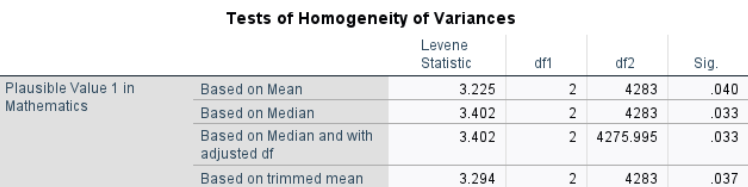
Interpretation: The p-values from all four versions of Levene’s Test (mean, median, trimmed mean, adjusted df) are less than .05, indicating that the assumption of equal variances is violated. However, given the large sample size and approximately equal group sizes, the one-way ANOVA is considered robust to this violation. We will proceed with the ANOVA test.
2.4 One-Way ANOVA Test
Results:
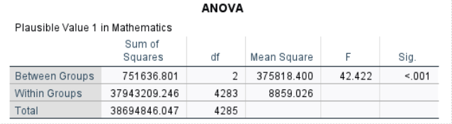
Interpretation: The one-way ANOVA showed a statistically significant difference in mean math scores (PV1MATH) among the three school types (\(F(2,4283) = 42.42, p<.001\)). This means that at least one school type has a mean math score that differs significantly from the others.
2.5 Post-hoc Tests
2.5.1 Bonferroni-Adjusted Pairwise t Tests
Bonferroni-adjusted t tests divide α by the number of comparisons for a conservative test.
Results:
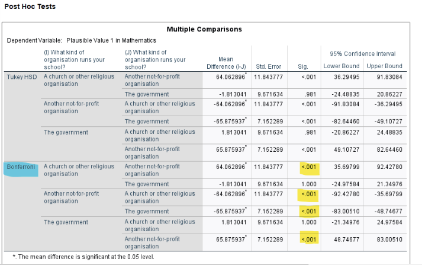
Interpretation:
The Bonferroni-adjusted pairwise t-tests indicate that students in non-profit schools have significantly different mean math scores compared to both government (\(p < .001\)) and religious schools (\(p < .001\)), while government and religious schools do not significantly differ from each other (\(p = 1\)).
2.5.2 Tukey’s HSD Test
Tukey’s HSD compares all pairs and controls familywise error rate.
Results:
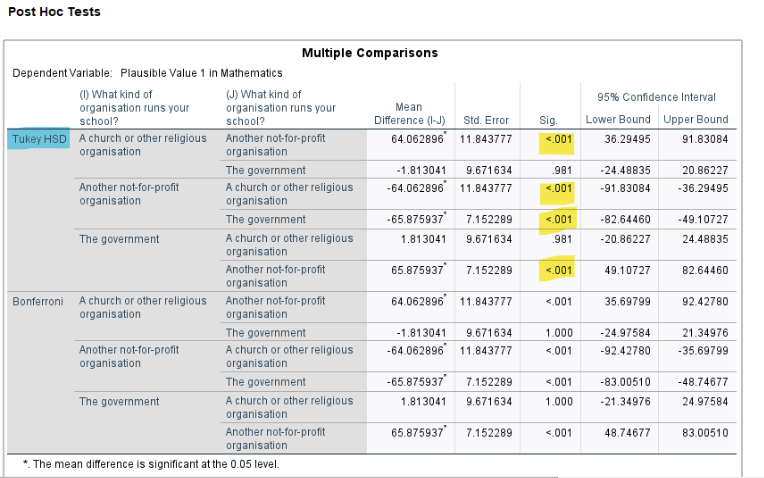
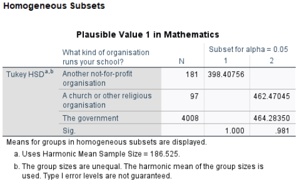
Interpretation: Tukey’s HSD confirms the Bonferroni results, showing that (1) math score in non-profit schools is significantly lower than in government schools (mean difference = -65.88, \(p < .001\)) and in religious schools (mean difference = -64.06, \(p < .001\)); (2) no significant difference in mean math scores between religious and government schools (mean difference = -1.81, \(p = .98\)).
Tukey’s HSD homogeneous subsets further reinforce this finding, showing that the “Another not-for-profit” group forms its own subset with a significantly lower mean, whereas the “Church/Religious” and “Government” schools form a higher subset and do not differ significantly from each other.
2.6 Effect Size
Results:
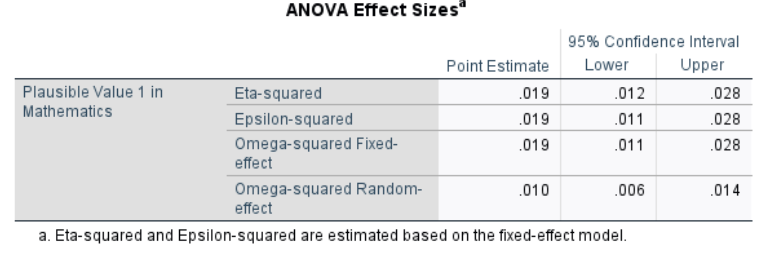
Interpretation:
Both the \(\eta^2\) and \(\omega^2\) values are 0.02, meaning that about 2% of the variance in math scores is explained by school type. According to common benchmarks, this represents a small effect size. This suggests that other factors, beyond school type, account for most of the differences in performance.
3. Two-Way ANOVA - Comparing Math Scores by School Type and Gender
We add gender as a second independent variable to explore potential interaction effects.
\(H_a\)(School Type): Mean math scores differ by school type.
\(H_a\)(Gender): Mean math scores differ by gender.
\(H_a\)(School Type × Gender): Differences in math scores by gender depend on school type.
Assume the homogeneity of variances and normality holds for the two-way ANOVA, we can proceed with the analysis.
SPSS Steps:
Click Analyze > General Linear Model > Univariate…
Move PV1MATH into Dependent Variable
Move SC014Q01TA and ST004D01Tinto Fixed Factor(s)
Click Options → Select Descriptive statistics, Estimates of effect size, and Homogeneity tests → Continue
Click Plots → Put ST004D01Ton the Horizontal Axis and SC014Q01TA as Separate Lines (or reverse) → Add → Continue
Click OK
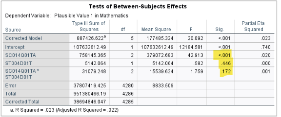
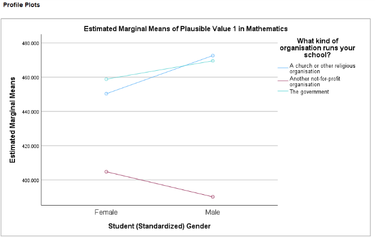
Interpretation: The two-way ANOVA results show a significant main effect of school type (\(F(2, 4280) = 42.91, p < .001\)), indicating that mean math scores differ significantly among the three school types (Government, Non-profit, Religious). In contrast, the main effect of gender is not significant (\(F(1, 4280) = 0.58, p = .446\)), suggesting that male and female students do not have statistically different average math scores.
4. Nonparametric Alternative: Kruskal-Wallis Test
If ANOVA assumptions (normality, homogeneity) are severely violated, use the Kruskal-Wallis Test as an alternative.
SPSS Steps:
Analyze > Nonparametric Tests > Legacy Dialogs > K Independent Samples
Move PV1MATH into Test Variable List
Move SC014Q01TA (School Type) into Grouping Variable
Click Define Range, enter min and max codes (e.g., 1 and 3) → Continue
Under Test Type, check Kruskal-Wallis H
Click Options → Check Descriptive → Continue
Click OK
Results:
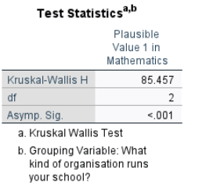
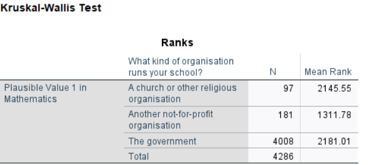
Interpretation:
The Kruskal-Wallis test consistently shows a significant difference in math scores (PV1MATH) among at least one pair of the school types (\(\chi^2 = 85.46, p < 0.05\)). Looking at the mean ranks, non-profit schools have the lowest math scores (mean rank ≈ 1312). Government and religious schools have higher and similar mean ranks (≈ 2181 and 2146). The Kruskal-Wallis test does not specify which pairs of school types differ. To determine this, post hoc tests such as Dunn-Bonferroni are required. SPSS’s standard Kruskal-Wallis procedure does not provide these post hoc comparisons, so you would need to use R, Python, or other software to perform them.
Conclusion
The analysis of variance techniques and associated statistical methods covered in Chapter 10 underscore the importance of understanding and addressing variability in research designs. Central to these discussions is the One-Way ANOVA, which compares the means of three or more groups, highlighting differences between-group variance and within-group error variance. This distinction is essential for isolating the effects of independent variables and ensuring reliable conclusions, especially when evaluating multiple groups simultaneously without inflating the risk of a Type I error.
Expanding on these foundations, methods like two-way factorial ANOVA demonstrate the adaptability of variance analysis across various research contexts. Two-way factorial ANOVA allows researchers to examine the interaction effects between two independent variables, providing deeper insights into how multiple factors influence an outcome simultaneously.
Together, the tools and principles detailed in this chapter emphasize the critical role of statistical rigor in identifying meaningful patterns and effects, reinforcing key concepts like statistical power and the importance of controlling for error through thoughtful experimental design and post hoc testing strategies like Bonferroni corrections. These techniques provide a comprehensive framework for conducting reliable, interpretable, and impactful research.
Key Takeaways for Educational Researchers from Chapter 10
ANOVA prevents multiple testing errors. One-way ANOVA is a crucial tool for comparing three or more groups while controlling for Type I errors, which would increase if multiple t tests were conducted. This is particularly relevant, for example, when analyzing student performance across different instructional methods, grade levels, or educational interventions.
Between-group vs. within-group variance matters. ANOVA works by comparing variance between groups (due to instructional differences, policy interventions, or student demographics) with variance within groups (individual differences within the same group). If between-group variance is significantly higher, it suggests that at least one of the groups are statistically different.
Factorial ANOVA identifies interaction effects. A two-way factorial ANOVA helps researchers examine how multiple independent variables interact to influence an educational outcome. This is particularly useful in evaluating whether interventions work differently for different groups (e.g., high- vs. low-achieving students).
Checking assumptions is crucial for valid results. Before conducting any type of ANOVA, researchers must check normality, homogeneity of variances, and independence of observations. If these assumptions are violated, adjustments (e.g., using nonparametric alternatives like the Kruskal-Wallis Test) or transformations may be necessary to ensure valid interpretations.
Post hoc tests determine specific group differences. ANOVA tells us that at least one group differs, but post hoc tests (e.g., Tukey’s HSD, Bonferroni) identify which groups differ significantly. For example, in an education study comparing teaching methods, post hoc analysis helps determine whether technology-aided learning is significantly better than visualization or repetition-based methods.
Effect Size is as important as statistical significance. Eta-squared (η²) and omega-squared (ω²) quantify how much variance in the outcome variable is explained by the group membership. Even if a finding is statistically significant, a small effect size may indicate limited practical impact, guiding educators and policymakers in prioritizing interventions that have meaningful effects on student outcomes.
Key Definitions from Chapter 10
The Bonferroni post hoc test is the most conservative. It simply divides your starting alpha level by the number of tests you are running and then conducts t tests between each pair.
Error variance in ANOVA refers to the variation in the dependent variable that cannot be explained by the independent variable(s). It represents the variability within groups or conditions, which arises from random differences among individual observations rather than systematic differences between groups.
Experimentwise alpha (or familywise alpha) refers to the overall probability of making at least one Type I error (false positive) across all hypothesis tests in an experiment. This is particularly relevant in situations where multiple comparisons are made, as the risk of incorrectly rejecting a null hypothesis increases with the number of tests.
A factorial ANOVA is a statistical test used to analyze the effects of two or more categorical independent variables (factors) on a continuous dependent variable, including their interaction effects. It extends the one-way ANOVA by examining multiple factors simultaneously, allowing for a more comprehensive analysis.
Fisher’s Least Significant Difference test (LSD) is a simple post hoc pairwise comparison procedure used to determine whether the means of two groups differ significantly.
The Kruskal-Wallis Test is a nonparametric statistical method used to determine whether there are significant differences between three or more independent groups based on a ranked dependent variable.
Multiple comparison procedures make comparisons while controlling for the increased risk of Type I error that occurs due to multiple testing
One-way Analysis of Variance (ANOVA) is a statistical method used to compare the means of three or more groups to determine if there are statistically significant differences among them.
Tukey’s Honestly Significant Difference (Tukey’s or HSD) test is a post hoc analysis method used to determine which specific group means are significantly different from each other. It controls the familywise error rate (the probability of making one or more Type I errors) while comparing all possible pairs of group means.
Check Your Understanding
What is the primary purpose of a One-Way ANOVA?
a. To compare the means of two groups b. To compare the means of three or more groups c. To analyze relationships between continuous variables d. To assess correlations between independent and dependent variablesWhich of the following increases the risk of a Type I error when comparing multiple groups?
a. Failing to apply a correction for multiple comparisons (e.g., Bonferroni correction) b. Running multiple t tests on the same data set c. Including covariates in the analysis d. Increasing sample sizeWhich test is the most conservative post hoc method for controlling Type I error?
a. Tukey’s HSD b. Fisher’s LSD c. Bonferroni test d. Kruskal-Wallis TestThe Kruskal-Wallis Test is best suited for which type of data?
a. Ordinal data or non-normal distributions b. Normally distributed interval data c. Binary data d. Continuous dataWhat does homogeneity of variance mean in ANOVA?
a. All groups have the same sample size b. The dependent variable is normally distributed c. The variances of the dependent variable are similar across groups d. There is no interaction effect between variables
What distinguishes a factorial ANOVA from a one-way ANOVA?
a. It compares means between more than two groups.
b. It examines the effects of two or more independent variables and their interactions on a dependent variable.
c. It includes covariates to control for variability in the dependent variable.
d. It is used for nonparametric data. Which of the following is an example of a factorial ANOVA design?
a. Comparing the mean scores of students across three different teaching methods. b. Assessing the correlation between test scores and student motivation. c. Testing for differences in a single group’s test scores across three different time points. d. Analyzing the effects of teaching method (lecture vs. inquiry-based) and student age group (young vs. adult) on test scores.What is the effect size measure commonly used in ANOVA to estimate the proportion of variance explained by the independent variable?
a. Pearson’s r b. Eta Squared c. Cronbach’s Alpha d. Chi-Squared